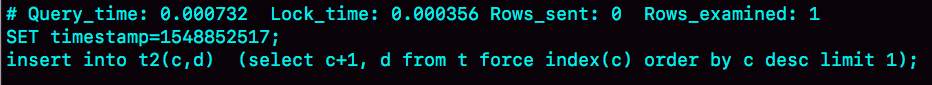
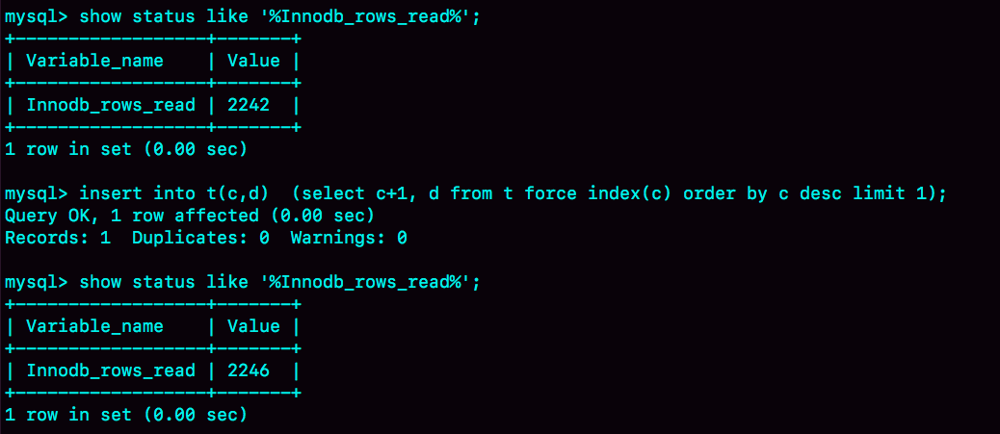

- 00 开篇词 这一次，让我们一起来搞懂MySQL.md.html
- 01 基础架构：一条SQL查询语句是如何执行的？.md.html
- 02 日志系统：一条SQL更新语句是如何执行的？.md.html
- 03 事务隔离：为什么你改了我还看不见？.md.html
- 04 深入浅出索引（上）.md.html
- 05 深入浅出索引（下）.md.html
- 06 全局锁和表锁 ：给表加个字段怎么有这么多阻碍？.md.html
- 07 行锁功过：怎么减少行锁对性能的影响？.md.html
- 08 事务到底是隔离的还是不隔离的？.md.html
- 09 普通索引和唯一索引，应该怎么选择？.md.html
- 10 MySQL为什么有时候会选错索引？.md.html
- 11 怎么给字符串字段加索引？.md.html
- 12 为什么我的MySQL会“抖”一下？.md.html
- 13 为什么表数据删掉一半，表文件大小不变？.md.html
- 14 count()这么慢，我该怎么办？.md.html
- 15 答疑文章（一）：日志和索引相关问题.md.html
- 16 “order by”是怎么工作的？.md.html
- 17 如何正确地显示随机消息？.md.html
- 18 为什么这些SQL语句逻辑相同，性能却差异巨大？.md.html
- 19 为什么我只查一行的语句，也执行这么慢？.md.html
- 20 幻读是什么，幻读有什么问题？.md.html
- 21 为什么我只改一行的语句，锁这么多？.md.html
- 22 MySQL有哪些“饮鸩止渴”提高性能的方法？.md.html
- 23 MySQL是怎么保证数据不丢的？.md.html
- 24 MySQL是怎么保证主备一致的？.md.html
- 25 MySQL是怎么保证高可用的？.md.html
- 26 备库为什么会延迟好几个小时？.md.html
- 27 主库出问题了，从库怎么办？.md.html
- 28 读写分离有哪些坑？.md.html
- 29 如何判断一个数据库是不是出问题了？.md.html
- 30 答疑文章（二）：用动态的观点看加锁.md.html
- 31 误删数据后除了跑路，还能怎么办？.md.html
- 32 为什么还有kill不掉的语句？.md.html
- 33 我查这么多数据，会不会把数据库内存打爆？.md.html
- 34 到底可不可以使用join？.md.html
- 35 join语句怎么优化？.md.html
- 36 为什么临时表可以重名？.md.html
- 37 什么时候会使用内部临时表？.md.html
- 38 都说InnoDB好，那还要不要使用Memory引擎？.md.html
- 39 自增主键为什么不是连续的？.md.html
- 40 insert语句的锁为什么这么多？.md.html
- 41 怎么最快地复制一张表？.md.html
- 42 grant之后要跟着flush privileges吗？.md.html
- 43 要不要使用分区表？.md.html
- 44 答疑文章（三）：说一说这些好问题.md.html
- 45 自增id用完怎么办？.md.html
- 我的MySQL心路历程.md.html
- 结束语 点线网面，一起构建MySQL知识网络.md.html
- 捐赠
40 insert语句的锁为什么这么多？
在上一篇文章中，我提到 MySQL 对自增主键锁做了优化，尽量在申请到自增 id 以后，就释放自增锁。
因此，insert 语句是一个很轻量的操作。不过，这个结论对于“普通的 insert 语句”才有效。也就是说，还有些 insert 语句是属于“特殊情况”的，在执行过程中需要给其他资源加锁，或者无法在申请到自增 id 以后就立马释放自增锁。
那么，今天这篇文章，我们就一起来聊聊这个话题。
insert … select 语句
我们先从昨天的问题说起吧。表 t 和 t2 的表结构、初始化数据语句如下，今天的例子我们还是针对这两个表展开。
CREATE TABLE `t` (
`id` int(11) NOT NULL AUTO_INCREMENT,
`c` int(11) DEFAULT NULL,
`d` int(11) DEFAULT NULL,
PRIMARY KEY (`id`),
UNIQUE KEY `c` (`c`)
) ENGINE=InnoDB;
insert into t values(null, 1,1);
insert into t values(null, 2,2);
insert into t values(null, 3,3);
insert into t values(null, 4,4);
create table t2 like t
现在，我们一起来看看为什么在可重复读隔离级别下，binlog_format=statement 时执行：
insert into t2(c,d) select c,d from t;
这个语句时，需要对表 t 的所有行和间隙加锁呢？
其实，这个问题我们需要考虑的还是日志和数据的一致性。我们看下这个执行序列：

图 1 并发 insert 场景
实际的执行效果是，如果 session B 先执行，由于这个语句对表 t 主键索引加了 (-∞,1] 这个 next-key lock，会在语句执行完成后，才允许 session A 的 insert 语句执行。
但如果没有锁的话，就可能出现 session B 的 insert 语句先执行，但是后写入 binlog 的情况。于是，在 binlog_format=statement 的情况下，binlog 里面就记录了这样的语句序列：
insert into t values(-1,-1,-1);
insert into t2(c,d) select c,d from t;
这个语句到了备库执行，就会把 id=-1 这一行也写到表 t2 中，出现主备不一致。
insert 循环写入
当然了，执行 insert … select 的时候，对目标表也不是锁全表，而是只锁住需要访问的资源。
如果现在有这么一个需求：要往表 t2 中插入一行数据，这一行的 c 值是表 t 中 c 值的最大值加 1。
此时，我们可以这么写这条 SQL 语句 ：
insert into t2(c,d) (select c+1, d from t force index(c) order by c desc limit 1);
这个语句的加锁范围，就是表 t 索引 c 上的 (3,4] 和 (4,supremum] 这两个 next-key lock，以及主键索引上 id=4 这一行。
它的执行流程也比较简单，从表 t 中按照索引 c 倒序，扫描第一行，拿到结果写入到表 t2 中。
因此整条语句的扫描行数是 1。
这个语句执行的慢查询日志（slow log），如下图所示：

图 2 慢查询日志 – 将数据插入表 t2
通过这个慢查询日志，我们看到 Rows_examined=1，正好验证了执行这条语句的扫描行数为 1。
那么，如果我们是要把这样的一行数据插入到表 t 中的话：
insert into t(c,d) (select c+1, d from t force index(c) order by c desc limit 1);
语句的执行流程是怎样的？扫描行数又是多少呢？
这时候，我们再看慢查询日志就会发现不对了。

图 3 慢查询日志 – 将数据插入表 t
可以看到，这时候的 Rows_examined 的值是 5。
我在前面的文章中提到过，希望你都能够学会用 explain 的结果来“脑补”整条语句的执行过程。今天，我们就来一起试试。
如图 4 所示就是这条语句的 explain 结果。

图 4 explain 结果
从 Extra 字段可以看到“Using temporary”字样，表示这个语句用到了临时表。也就是说，执行过程中，需要把表 t 的内容读出来，写入临时表。
图中 rows 显示的是 1，我们不妨先对这个语句的执行流程做一个猜测：如果说是把子查询的结果读出来（扫描 1 行），写入临时表，然后再从临时表读出来（扫描 1 行），写回表 t 中。那么，这个语句的扫描行数就应该是 2，而不是 5。
所以，这个猜测不对。实际上，Explain 结果里的 rows=1 是因为受到了 limit 1 的影响。
从另一个角度考虑的话，我们可以看看 InnoDB 扫描了多少行。如图 5 所示，是在执行这个语句前后查看 Innodb_rows_read 的结果。

图 5 查看 Innodb_rows_read 变化
可以看到，这个语句执行前后，Innodb_rows_read 的值增加了 4。因为默认临时表是使用 Memory 引擎的，所以这 4 行查的都是表 t，也就是说对表 t 做了全表扫描。
这样，我们就把整个执行过程理清楚了：
- 创建临时表，表里有两个字段 c 和 d。
- 按照索引 c 扫描表 t，依次取 c=4、3、2、1，然后回表，读到 c 和 d 的值写入临时表。这时，Rows_examined=4。
- 由于语义里面有 limit 1，所以只取了临时表的第一行，再插入到表 t 中。这时，Rows_examined 的值加 1，变成了 5。
也就是说，这个语句会导致在表 t 上做全表扫描，并且会给索引 c 上的所有间隙都加上共享的 next-key lock。所以，这个语句执行期间，其他事务不能在这个表上插入数据。
至于这个语句的执行为什么需要临时表，原因是这类一边遍历数据，一边更新数据的情况，如果读出来的数据直接写回原表，就可能在遍历过程中，读到刚刚插入的记录，新插入的记录如果参与计算逻辑，就跟语义不符。
由于实现上这个语句没有在子查询中就直接使用 limit 1，从而导致了这个语句的执行需要遍历整个表 t。它的优化方法也比较简单，就是用前面介绍的方法，先 insert into 到临时表 temp_t，这样就只需要扫描一行；然后再从表 temp_t 里面取出这行数据插入表 t1。
当然，由于这个语句涉及的数据量很小，你可以考虑使用内存临时表来做这个优化。使用内存临时表优化时，语句序列的写法如下：
create temporary table temp_t(c int,d int) engine=memory;
insert into temp_t (select c+1, d from t force index(c) order by c desc limit 1);
insert into t select * from temp_t;
drop table temp_t;
insert 唯一键冲突
前面的两个例子是使用 insert … select 的情况，接下来我要介绍的这个例子就是最常见的 insert 语句出现唯一键冲突的情况。
对于有唯一键的表，插入数据时出现唯一键冲突也是常见的情况了。我先给你举一个简单的唯一键冲突的例子。

图 6 唯一键冲突加锁
这个例子也是在可重复读（repeatable read）隔离级别下执行的。可以看到，session B 要执行的 insert 语句进入了锁等待状态。
也就是说，session A 执行的 insert 语句，发生唯一键冲突的时候，并不只是简单地报错返回，还在冲突的索引上加了锁。我们前面说过，一个 next-key lock 就是由它右边界的值定义的。这时候，session A 持有索引 c 上的 (5,10] 共享 next-key lock（读锁）。
至于为什么要加这个读锁，其实我也没有找到合理的解释。从作用上来看，这样做可以避免这一行被别的事务删掉。
这里官方文档有一个描述错误，认为如果冲突的是主键索引，就加记录锁，唯一索引才加 next-key lock。但实际上，这两类索引冲突加的都是 next-key lock。
备注：这个 bug，是我在写这篇文章查阅文档时发现的，已经发给官方并被 verified 了。
有同学在前面文章的评论区问到，在有多个唯一索引的表中并发插入数据时，会出现死锁。但是，由于他没有提供复现方法或者现场，我也无法做分析。所以，我建议你在评论区发问题的时候，尽量同时附上复现方法，或者现场信息，这样我才好和你一起分析问题。
这里，我就先和你分享一个经典的死锁场景，如果你还遇到过其他唯一键冲突导致的死锁场景，也欢迎给我留言。

图 7 唯一键冲突 – 死锁
在 session A 执行 rollback 语句回滚的时候，session C 几乎同时发现死锁并返回。
这个死锁产生的逻辑是这样的：
- 在 T1 时刻，启动 session A，并执行 insert 语句，此时在索引 c 的 c=5 上加了记录锁。注意，这个索引是唯一索引，因此退化为记录锁（如果你的印象模糊了，可以回顾下[第 21 篇文章]介绍的加锁规则）。
- 在 T2 时刻，session B 要执行相同的 insert 语句，发现了唯一键冲突，加上读锁；同样地，session C 也在索引 c 上，c=5 这一个记录上，加了读锁。
- T3 时刻，session A 回滚。这时候，session B 和 session C 都试图继续执行插入操作，都要加上写锁。两个 session 都要等待对方的行锁，所以就出现了死锁。
这个流程的状态变化图如下所示。

图 8 状态变化图 – 死锁
insert into … on duplicate key update
上面这个例子是主键冲突后直接报错，如果是改写成
insert into t values(11,10,10) on duplicate key update d=100;
的话，就会给索引 c 上 (5,10] 加一个排他的 next-key lock（写锁）。
insert into … on duplicate key update 这个语义的逻辑是，插入一行数据，如果碰到唯一键约束，就执行后面的更新语句。
注意，如果有多个列违反了唯一性约束，就会按照索引的顺序，修改跟第一个索引冲突的行。
现在表 t 里面已经有了 (1,1,1) 和 (2,2,2) 这两行，我们再来看看下面这个语句执行的效果：
图 9 两个唯一键同时冲突
可以看到，主键 id 是先判断的，MySQL 认为这个语句跟 id=2 这一行冲突，所以修改的是 id=2 的行。
需要注意的是，执行这条语句的 affected rows 返回的是 2，很容易造成误解。实际上，真正更新的只有一行，只是在代码实现上，insert 和 update 都认为自己成功了，update 计数加了 1， insert 计数也加了 1。
小结
今天这篇文章，我和你介绍了几种特殊情况下的 insert 语句。
insert … select 是很常见的在两个表之间拷贝数据的方法。你需要注意，在可重复读隔离级别下，这个语句会给 select 的表里扫描到的记录和间隙加读锁。
而如果 insert 和 select 的对象是同一个表，则有可能会造成循环写入。这种情况下，我们需要引入用户临时表来做优化。
insert 语句如果出现唯一键冲突，会在冲突的唯一值上加共享的 next-key lock(S 锁)。因此，碰到由于唯一键约束导致报错后，要尽快提交或回滚事务，避免加锁时间过长。
最后，我给你留一个问题吧。
你平时在两个表之间拷贝数据用的是什么方法，有什么注意事项吗？在你的应用场景里，这个方法，相较于其他方法的优势是什么呢？
你可以把你的经验和分析写在评论区，我会在下一篇文章的末尾选取有趣的评论来和你一起分析。感谢你的收听，也欢迎你把这篇文章分享给更多的朋友一起阅读。
上期问题时间
我们已经在文章中回答了上期问题。
有同学提到，如果在 insert … select 执行期间有其他线程操作原表，会导致逻辑错误。其实，这是不会的，如果不加锁，就是快照读。
一条语句执行期间，它的一致性视图是不会修改的，所以即使有其他事务修改了原表的数据，也不会影响这条语句看到的数据。
© 2019 - 2023 Liangliang Lee. Powered by gin and hexo-theme-book.